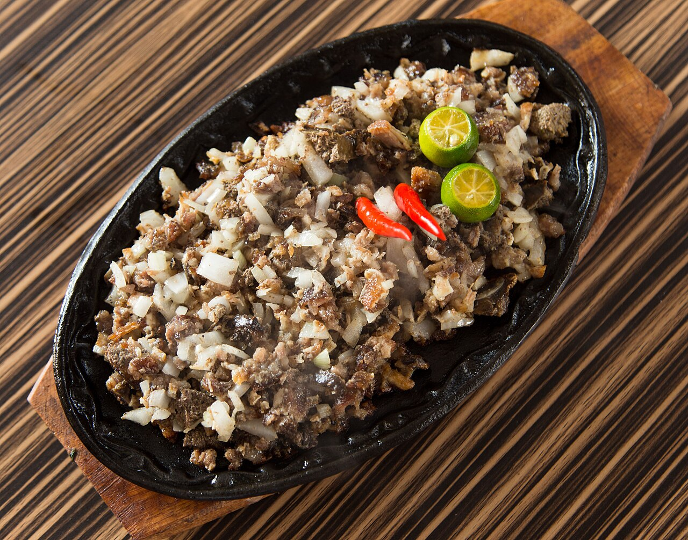

SISIG
Home

Description
Sisig is a popular Filipino dish, a savory and spicy pork hash,
typically made with chopped pork jowl and ears, seasoned with calamansi,
onions, and chili peppers, and often served on a sizzling hot plate.
Ingredient
- 1 lb pork belly
- 1 whole pork snout + jowls
- 1 pig ear
- 1/2 c chicken liver
For Boiling
- 1 c vinegar
- 1/2 c soy sauce
- 2 garlic cloves (1 head of garlic's worth)
- 2 bay leaves
- 1 T salt
- 1/2 t peppercorns
- 1 - sisig seasoning packet, or:
- 1/4 c kalamansi juice
- 1/4 c vinegar
- 1 t salt
- 1/2 t ground pepper
- 1 t garlic powder
- I T oil
- 10 thai chilis, chopped
- 3/4 c chopped shallots (can also use red onion)
- 1/4 c mayonnaise
- 1 egg, for topping
- 1 T butter (optional)
Steps
- Combine pork belly, face, ears, vinegar, soy sauce in a stock pot. Fill with water until meat is covered. Add bay leaves, salt, and peppercorns. Bring to a boil then simmer for at least an hour or until meat is no longer tight and tough.
- Remove meat from pot and grill for 10 minutes.
- Chop pork belly and face meat into 1/4 - 1/2 inch cubes. Finely chop pig ear pieces.
- Mix chopped pork in a bowl and add Thai chilis, kalamansi juice, vinegar, salt, pepper, and garlic powder (or sisig seasoning packet)
- In a saute pan over medium heat, add 1 T oil and saute shallots for 1-2 minutes. Add chicken livers; mash and saute until cooked through.
- Add chopped pork (with liquids) to saute pan, saute until meat is hot. Add mayonnaise and combine.
- (Optional) Heat a cast iron platter, add 1 T butter, add a serving of sisig and top with a cracked egg while still hot.